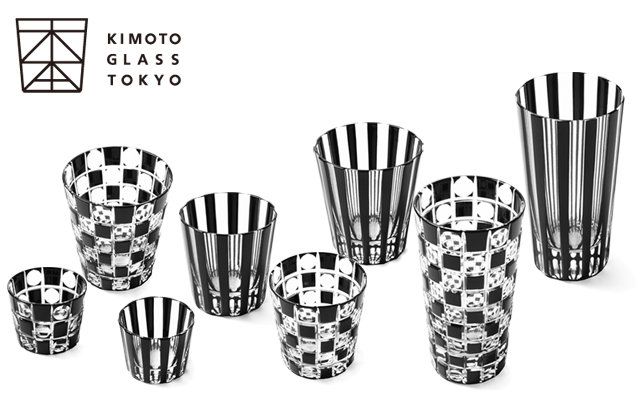

The high quality, colorful glassware with the spirit of the craftmanship.
Japanese glassware might not be well known in the United States compared with European glass. Kiriko is a tradition of cut glass, or beautiful Japanese craftsmanship. It looks similar to Eurpean glass, but has distinctive differences as explained below. I hope that Kiriko will bring new awareness into your lives.
Glass making has started more than 4,000 years ago in Mesopotamia, now Iraq and northern Syria, while in Japan, glass has been around for about 2,000 years. Glassware was first introduced to the Shosoin treasure house in the old capital Nara from Persia in the 6th century. It was not until the middle of the 16th century that European glass arrived in Japan. The Jesuit missionary Francis Xavier presented items made of glass including eye glasses as gifts for Japan's feudal lords in 1550. Under the Edo Shogunate, Nagasaki was the only gateway to the world, where the glassmaking was introduced from China.
It was in the 19th century that glass cutting was introduced to Japan. After the 18th century, European cut glassware was imported by Dutch ships. Since then, the glass was called giyaman. The name originates from the Portuguese "Diamante" because of the shininess of the cut facets. Therefore, being attracted to the beautiful giyaman, the Japanese developed thicker glass to cut patterns well and learn the technique. During the Edo period, the use of glass was becoming more widespread. The beauty of delicate translucent colored glass was even compared to beautiful women.
Compared with the imported European glass, Kiriko has soft edge quality because the cuts are more rounded and made by hand rather than with machines. The Japanese learned designs from Europe, so they initially made th3 same patterns. But getting a hint from textile fabrics, they later incorporated their own patterns. Their originality and imagination was condensed in rich variations.
The charm of Kiriko stands out when it is made of high-quality glass. Longing for European cut glass with the sparkle of diamond, glass workers in Osaka, Kyoto, Edo, and Satsuma went through great efforts to improve the basic materials themselves. The basic materials of Japanese glass are essentially bluish, greenish, or yellowish due to iron impurities. When comparing the cut glass from the advertisement of the Kagaya wholesaler in Edo with existing antique Kiriko, apparently clear cut glass with one or two patterns was mainstream. One of the reasons was the difficulty of making colored overlay, but above all, the fact that "clear" glass was probably more popular. This is emphasized in the expression of the Edo spirit by the brilliant radiance achieved through infinite repetition of simple cut patterns. The distinguishing mark of Edo kiriko is the smoothness of the cuts as if it is coated with oil. Having said that, nowadays, you can see more colored glass of Edo kiriko.
On the other hand, the Satsuma domain manufactured Satsuma Kiriko and developed "irokise (cased glass)" at the end of the Edo period. The glass making that had started in 1846 by Shimazu Narioki who invited glass workers from Kagaya in Edo to make medicine bottles changed direction when Shimazu Nariakira started creation of art work which included a view of overseas exports. At the end of the year 1851, they were successfully making cased crimson glass to the prestige of the domain. Unlike the clear Edo Kiriko, Satsuma Kiriko has a colorful range such as indigo blue, crimson, purple, verdigris, green, and yellow like olive. Kiriko entertains a combination of various patterns and the contrast of clear glass covered with colored glass. The most important features of Satsuma Kiriko is the gradation in colors called the "Bokashi" effect, subtle shadings of color.
The early 20th century saw Western influences spread into Japan through the Art Deco movement. Kiriko was also affected by variety of designs but kept its own gentle aesthetic of Edo. These days Japanese traditional craftsmanships of Kiriko been applied to modern design and technology. Kiriko keeps in step with the times...

There are different types of kiriko: drinking glasses, sake bottles, sake cups, bowls, teapots, and even iphone cover cases, and so on.